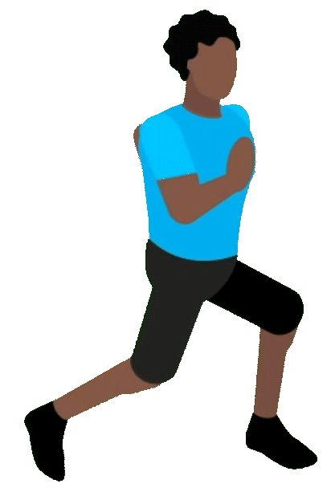

Flowfield
Balls
Sunrise and Sunset
Custom colour range for flowfield
Normal colour range for flowfield
Continue
Go Back
Colours of balls change
Colour of background changes
Colours of both balls and background change
Normal
Continue
Continue
Restart